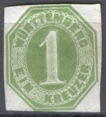
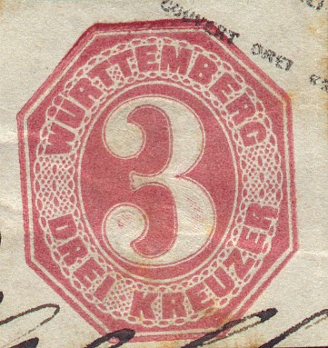
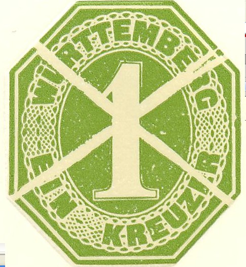
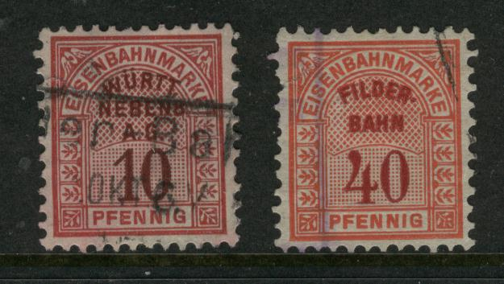
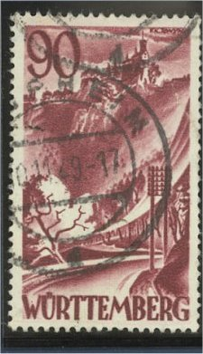

14 k front and backside
Return To Catalogue - Wurttemberg - Wurttemberg Official Stamps - Other German States -Germany
Note: on my website many of the
pictures can not be seen! They are of course present in the
catalogue;
contact me if you want to purchase it.


14 k front and backside
Envelopes (with overprint in different colours and sizes) 1 k green 3 k red 4 k yellow 6 k blue 7 k green 7 k blue 9 k brown 12 k violet 14 k violet
A modern 'reprint' of the 1 k value with defacing line (cross-shaped) was made in 1981 by the printing firm of Gehringer for the Daposta 81 exhibition. The text in the minisheet states that the original printing plates were used.

Modern reprint
Minisheet of a blue arms stamp together with a 1 k postal
stationary reprint with defacing lines.
5 p lilac 5 p green (1890) 10 p red 15 p yellow 20 p blue
The only value issued was 18 k green. It exists with four different overprints to be used for official purposes: "Noth-Post-Packetadresse", "Dienstl. Post-Packetadresse", "Post-Dienst-Sache" or "Dienst-sache." (see picture above).
With overprint "Post-Dienst-Sache."
Cut from a similar postcard, but with a smaller elliptic
overprint "K.WURTTEMB. POST-DIRECTION"
Several more wrappers, postcars etc appeared with the design of the postage stamps from 1866 and 1868 (see there).
(Reduced sizes)
Telegraph stamps exist for Wurttemberg, they have
the inscription "TELEGRAPH" and the value in black in
the center and at the bottom of the stamp for the pfennig stamps.
They were issued in 1875. I've seen the following values 5 p
grey, 10 p blue, 20 p brown, 25 p violet, 40 p brown, 50 p red,
80 p green and 80 p blue (rare). A very rare 35 p green also
exists (it was withdrawn in 1878). Furthermore I have seen some
'Mark' values with a blue value inscription: 1 M green, 2 M
orange, 4 M light blue and 10 M brown.
The most usual cancel is an elliptic cancel with the town name on
top and "TELEGRAPH" below (see images above).
Other values might exist. I have seen the
following values, 5 p red, 10 p red, 20 p blue, 25 p orange, 30 p
green, 40 p orange, 50 p lilac, 60 p blue, 70 p brown, 90 p
brown. The value seems to have been printed seperately in a
slightly different color. In slightly different design 1 M grey,
2 M yellow, 4 M brown and 5 M green.
I have also seen the overprint "Express"
on the values: 5 p red, 10 p red, 20 p blue, 25 p orange, 30 p
green, 40 p orange, 50 p lilac, 60 p blue, 70 p brown, 90 p
brown, 1 M grey, 2 M yellow, 4 M orange and 5 M green. The
"Express" overprint seems to have been printed together
with the value inscription (the colour shade is exactly the
same).
(40 p with typical railroad cancel)
Besides this 'half-circular' cancel, I have also seen square cancels with inscription in a straight line, such as "FRACHTGUT", or even circular cancels, resembling ordinary town with date cancels.
Some postage stamps with railway cancels:
'Bahnstempel' or railway cancels for "GR.SACHSENHEIM"
and "ESCHENAU"
"WURTT EISENBAHN- GESELLSCHAFT"
In the above "WURTT. EISENBAHN-
GESELLSCHAFT" design I have seen the values: 10 p
red, 25 p yellow (brown inscription), 30 p green, 40 p red, 50 p
violet, 60 p blue, 70 p brown (inscription different shade of
brown), 100 p grey, 500 p green.
I have also seen similar stamps but with inscription "WURTT
NEBENS. A.G." in the values 10 p red, 20 p blue, 40
p orange (red inscription) and 50 p lilac (violet inscription).

"WURTT. NEBENB A.G." and "FILDER-BAHN"
Inscription "COMMISSION FUR RETOURBRIEFE"
Two forgeries of these "RETOURBRIEFE" are described in 'How to detect forged stamps' by T.Dalston (1865); in both forgeries the dot behind "RETOURBRIEFE" is missing. One forgery is referred to as 'Hamburg forgery'.
Just after the end of World War II, stamps were issued in the French occupied zone of Germany, some examples for Wurttemberg:

The following values were issued: 3 p violet, 6 p red, 15 p blue and 20 p green.
A violet 5 p stamp was issued in 1900 with inscription 'K.W. ZOLLVERWALTUNG FEUERVERSICHERUNG' (customs fire insurance). Sorry, no picture available yet.
In this design were issued: 5 p green, 10 p red, 20 p blue, 25 p orange, 40 p blue, 50 p lilac and in a slightly larger design: 1 M red, 2 M blue, 5 M red, 10 M grey and 50 M orange.
In this design were issued: 5 p red, 10 p blue, 20 p lilac, 25 p grey, 30 p orange, 40 p brown, 50 p green and in a slightly larger design: 1 M orange, 2 M red, 5 M green, 10 M brown and 50 M blue.
A fiscal stamp of Stuttgart, inscription 'STUTTGART WAGGELD':
In the above design were issued the following
values in 1870 (all imperforate): 1 k red, 1 k blue, 2 k red, 2 k
blue, 3 k blue, 6 k red, 6 k blue, 12 k red, 12 k blue, 18 k red,
18 k blue, 30 k blue and 1 F blue. In 1875 the currency was
changed and the following values were issued:
In the colour red, imperforate (1875) or perforated (1882): 1 p,
2 p, 3 p, 5 p, 10 p, 20 p, 30 p, 40 p, 50 p and 1 M (imperforate
only)
In the colour blue, imperforate (1875) or perforated (1882): 1 p,
2 p, 3 p, 5 p, 10 p, 20 p, 30 p, 50 p and 1 M (imperforate only).
In the colour violet, imperforate (1875) or perforated (1882): 1
p, 2 p, 3 p, 5 p, 10 p, 20 p, 30 p, 40 p (imperforate only) and
50 p.
In the colour brown (1896, perforated only): 1 p, 2 p, 3 p, 5 p,
10 p, 20 p, 30 p, 40 p and 50 p.
In the colour green (1897, imperforate only): 1 p, 2 p, 3 p, 5 p,
10 p, 20 p, 30 p and 50 p.
All these different colours were for different parts of
Stuttgart. In 1898 a general issue followed in the colours (all
perforated): 1 p black, 2 p red, 3 p brown, 5 p blue, 10 p brown,
20 p black on red, 30 p black on green, 40 p black on blue and 50
p black on brown
I have seen many stamps with inscription 'Mobelmesse STUTTGART', example:
These stamps seem to have been issued for a furniture fair; I have seen the values: 3 p brown, 3 p black on green, 3 p black on lilac,5 p orange, 5 p black on red, 5 p black on yellow, 6 p orange, 10 p violet, 10 p green on yellow, 10 p orange, 15 p orange on yellow, 20 p orange, 20 p brown on yellow, 25 p black on lilac, 25 p black on yellow, 30 p black on green, 30 p orange on yellow, 30 p green 30 p blue (different design), 50 p blue on grey and 50 p lilac.
Some local fiscal stamps of the city of Reutlingen (Waaggebuhr):
The octogonal design (as the 30 p above) was issued in 1875, the following values exist: 1 p black, 3 p violet, 6 p yellow, 12 p red, 30 p green and 60 p blue. In the square design (as the 50 p) exist: 1 p, 2 p, 3 p, 4 p, 5 p, 6 p, 7 p, 8 p, 9 p (all in black), 10 p brown, 20 p red, 30 p green, 40 p yellow, 50 p red, 60 p blue, 70 p green, 80 p orange, 90 p violet and 1 m black.
I've been told that this is a 1865 proof
This, I was told, is a 1940 reprint of such a proof.
{kind=link}
{kind=link}
{kind=link}
{kind=link}
{kind=link}